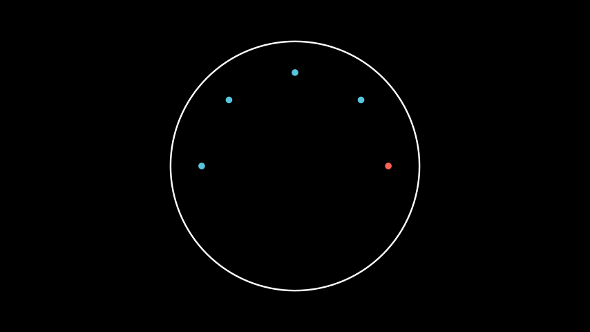
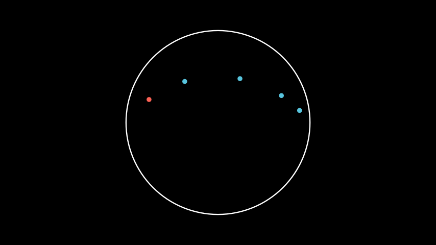

Point¶
- class Point(*coordinates: Sequence[float])[source]¶
A point in the Poincaré disk, identified by its Cartesian coordinates.
Examples
Example: PointExample ¶
from manim import * from hmanim.poincare import Disk, Dot, Point class PointExample(Scene): def construct(self): disk = Disk( radius=3, color=WHITE, ) self.add(disk) # Denote the distance in x-direction. x_label = LabeledLine( label = "0.6", start=disk.scaled_point(Point()), end=disk.scaled_point(Point(0.6, 0.0)), ) self.add(x_label) # Denote the distance in y-direction. y_label = LabeledLine( label = "0.3", start=disk.scaled_point(Point(0.6, 0.0)), end=disk.scaled_point(Point(0.6, 0.3)), ) self.add(y_label) # The corresponding point. point = Point(0.6, 0.3) dot = Dot( point, disk=disk, color=BLUE, ) self.add(dot)
from hmanim.poincare import Disk, Dot, Point class PointExample(Scene): def construct(self): disk = Disk( radius=3, color=WHITE, ) self.add(disk) # Denote the distance in x-direction. x_label = LabeledLine( label = "0.6", start=disk.scaled_point(Point()), end=disk.scaled_point(Point(0.6, 0.0)), ) self.add(x_label) # Denote the distance in y-direction. y_label = LabeledLine( label = "0.3", start=disk.scaled_point(Point(0.6, 0.0)), end=disk.scaled_point(Point(0.6, 0.3)), ) self.add(y_label) # The corresponding point. point = Point(0.6, 0.3) dot = Dot( point, disk=disk, color=BLUE, ) self.add(dot)- get_angle() float[source]¶
Get the angle in radians by which the point is rotated away from the origin.
- Returns:
The angle in radians.
- Return type:
float
Examples
Example: PointGetAngleExample ¶
from manim import * from hmanim.poincare import Disk, Dot, IdealPoint, Point class PointGetAngleExample(Scene): def construct(self): disk = Disk( radius=3, color=WHITE, ) self.add(disk) origin = Point() origin_dot = Dot( origin, disk=disk, color=WHITE, ) self.add(origin_dot) point = Point(0.4, 0.2) dot = Dot( point, disk=disk, color=BLUE, ) self.add(dot) ideal_point = IdealPoint(point.get_angle()) ideal_dot = Dot( ideal_point, disk=disk, color=RED, ) self.add(ideal_dot)
from hmanim.poincare import Disk, Dot, IdealPoint, Point class PointGetAngleExample(Scene): def construct(self): disk = Disk( radius=3, color=WHITE, ) self.add(disk) origin = Point() origin_dot = Dot( origin, disk=disk, color=WHITE, ) self.add(origin_dot) point = Point(0.4, 0.2) dot = Dot( point, disk=disk, color=BLUE, ) self.add(dot) ideal_point = IdealPoint(point.get_angle()) ideal_dot = Dot( ideal_point, disk=disk, color=RED, ) self.add(ideal_dot)
- get_x() float[source]¶
The x-coordinate of the point.
- Returns:
The x-coordinate of the point.
- Return type:
float
- get_y() float[source]¶
The y-coordinate of the point.
- Returns:
The y-coordinate of the point.
- Return type:
float
- is_ideal() bool[source]¶
Check if the point is an ideal point.
- Returns:
True if the point is an ideal point, False otherwise.
- Return type:
bool
- is_origin() bool[source]¶
Check if the point is the origin.
- Returns:
True if the point is the origin, False otherwise.
- Return type:
bool
- rotated_by(angle: float) Point[source]¶
Rotate the point by the given angle in radians around the origin.
- Parameters:
angle (float) – The angle to rotate the point by.
- Returns:
The rotated point.
- Return type:
Examples
Example: PointRotatedByExample ¶
from manim import * from hmanim.poincare import Disk, Dot, Point class PointRotatedByExample(Scene): def construct(self): disk = Disk( radius=3, color=WHITE, ) self.add(disk) # The point to be rotated. point = Point(0.75, 0.0) dot = Dot( point, disk=disk, color=RED, ) self.add(dot) for i in range(1, 5): dot = Dot( point.copy().rotated_by(i * TAU / 8), disk=disk, color=BLUE, ) self.add(dot)
from hmanim.poincare import Disk, Dot, Point class PointRotatedByExample(Scene): def construct(self): disk = Disk( radius=3, color=WHITE, ) self.add(disk) # The point to be rotated. point = Point(0.75, 0.0) dot = Dot( point, disk=disk, color=RED, ) self.add(dot) for i in range(1, 5): dot = Dot( point.copy().rotated_by(i * TAU / 8), disk=disk, color=BLUE, ) self.add(dot)
- translated_by(distance: float) Point[source]¶
Translate the point by the given distance in positive x-direction. A negative distance will translate the point in the negative x-direction.
- Parameters:
distance (float) – The distance to translate the point by.
- Returns:
The translated point.
- Return type:
Examples
Example: PointTranslatedByExample ¶
from manim import * from hmanim.poincare import Disk, Dot, Point class PointTranslatedByExample(Scene): def construct(self): disk = Disk( radius=3, color=WHITE, ) self.add(disk) # The point to be translated. point = Point(-0.75, 0.25) dot = Dot( point, disk=disk, color=RED, ) self.add(dot) for i in range(1, 5): dot = Dot( point.copy().translated_by(i), disk=disk, color=BLUE, ) self.add(dot)
from hmanim.poincare import Disk, Dot, Point class PointTranslatedByExample(Scene): def construct(self): disk = Disk( radius=3, color=WHITE, ) self.add(disk) # The point to be translated. point = Point(-0.75, 0.25) dot = Dot( point, disk=disk, color=RED, ) self.add(dot) for i in range(1, 5): dot = Dot( point.copy().translated_by(i), disk=disk, color=BLUE, ) self.add(dot)